Olaylar tek bir platform üzerinden yönetilerek iş sürekliliğini tehdit eden kesinti, hata ve servis aksaklıklarına hızlı ve kontrollü müdahale sağlanır. Merkezi operasyon yapısı ile dağınık süreçler ortadan kalkar; ITIL4 uyumlu süreçler ölçülebilir ve sürdürülebilir hale gelir.
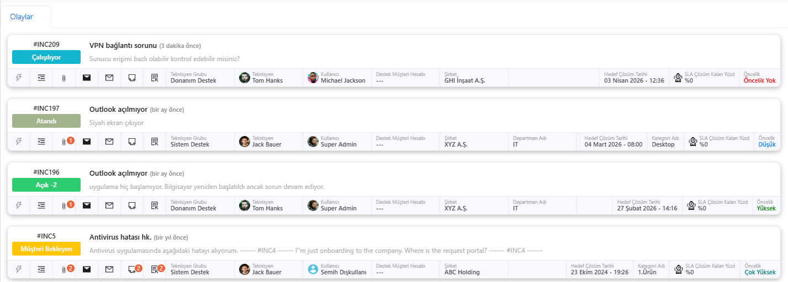
Olaylar tek bir platform üzerinden yönetilerek iş sürekliliğini tehdit eden tüm kesinti, hata ve servis aksaklıklarına hızlı ve kontrollü şekilde müdahale edilir. Tüm operasyon merkezi bir yapıdan yönetildiği için dağınık süreçler ortadan kaldırılır.
Olayların kaydedilmesi, sınıflandırılması, önceliklendirilmesi ve çözülmesi ITIL4 prensiplerine uygun şekilde yürütülür. Bu sayede süreçler standart, ölçülebilir ve sürdürülebilir bir yapıya kavuşur.
E-posta, sistem alarmları, monitoring araçları ve entegrasyonlar üzerinden gelen veriler otomatik olarak olay kaydına dönüştürülür. Interaction Management ile entegre çalışarak çağrılar tek tıkla olaya çevrilebilir.
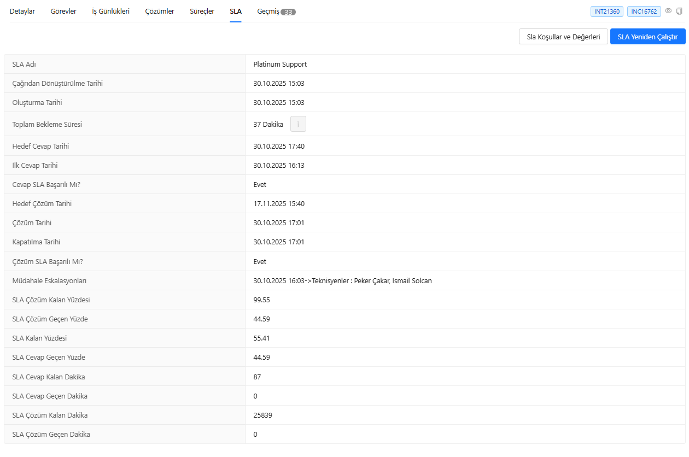
Sistem, oluşan olayları anlık olarak algılar ve ilgili ekipleri bilgilendirir. Bu sayede müdahale süresi minimuma indirilir ve iş kaybı azaltılır.
Olaylar etki ve aciliyet kriterlerine göre otomatik önceliklendirilir. SLA süreçleri anında başlatılır ve farklı müşteri, hizmet veya öncelik seviyelerine göre dinamik SLA politikaları uygulanır.
E-posta, SMS, web bildirimleri ve Teams entegrasyonu ile tüm paydaşlar anlık olarak bilgilendirilir. Bildirimler rol bazlı ve senaryoya özel olarak kurgulanabilir.
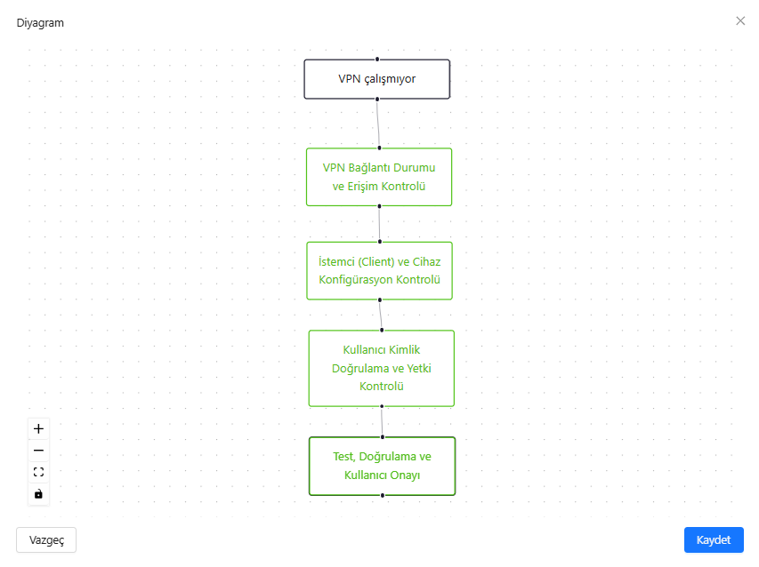
Bildirim içerikleri expression yapıları ile özelleştirilebilir. Böylece her bildirim, ilgili olayın detaylarına göre dinamik olarak şekillenir.
Olay kayıtları görsel kart yapısı ile listelenir. Bu yapı sayesinde kullanıcılar kayıtları hızlıca analiz edebilir ve aksiyon alabilir.
Açık, beklemede, çözüldü veya SLA ihlali gibi durumlar tutarlı bir renk paletiyle kodlanır; liste veya pano görünümünde ekip, öncelik gerektiren kayıtları metin okumadan ayırt edebilir. Bu görsel dil, yoğun iş yükünde tarama süresini kısaltır ve yanlış önceliklendirmeyi azaltır.
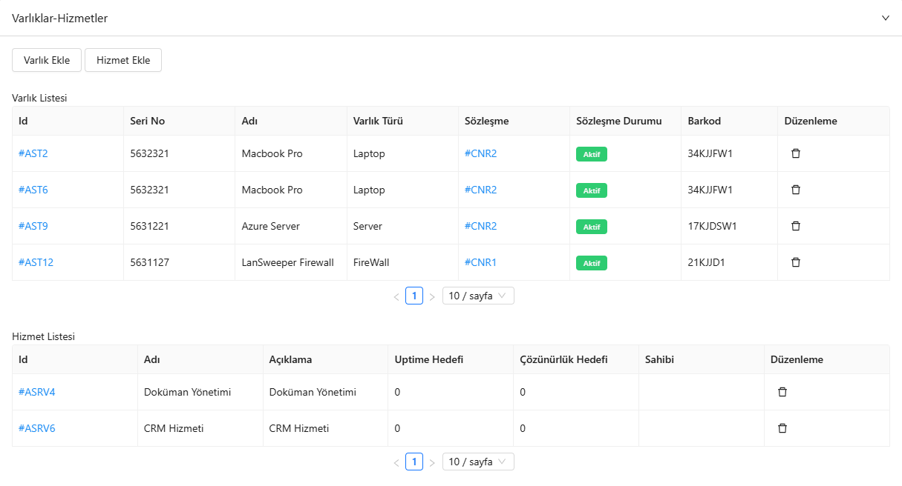
İlk temas, atama veya güncelleme sonrası henüz “işlenmemiş” sayılan kayıtlar rozet, vurgu veya liste üst sıralaması ile belirginleştirilebilir. Böylece nöbet değişimlerinde ve çoklu ekran kullanımında bile yeni veya bekleyen işler sessizce kalıp kaybolmaz; müşteri tarafında oluşan algı gecikmesi azalır.
Detay sayfasına geçmeden durum, öncelik, kategori, atanan grup veya kişi gibi alanlar tek tık veya kısa bir açılır panel üzerinden güncellenebilir. Toplantı sırasında, telefon görüşmesi esnasında veya çok kayıtlı listelerde bu akış, tıklama sayısını düşürür ve günlük operasyon hızını doğrudan artırır.
Major olay, yönetim takibi veya belirli bir müşteri için kritik kayıtlar kişisel veya ekip görünümünde sabitlenebilir; sık dönülen işler ise favori listelerine alınabilir. Standart filtrelerden bağımsız, “benim önceliğim” katmanı oluşturularak dikkat dağılığı azaltılır ve SLA riski yüksek işler üst çekmecede tutulur.
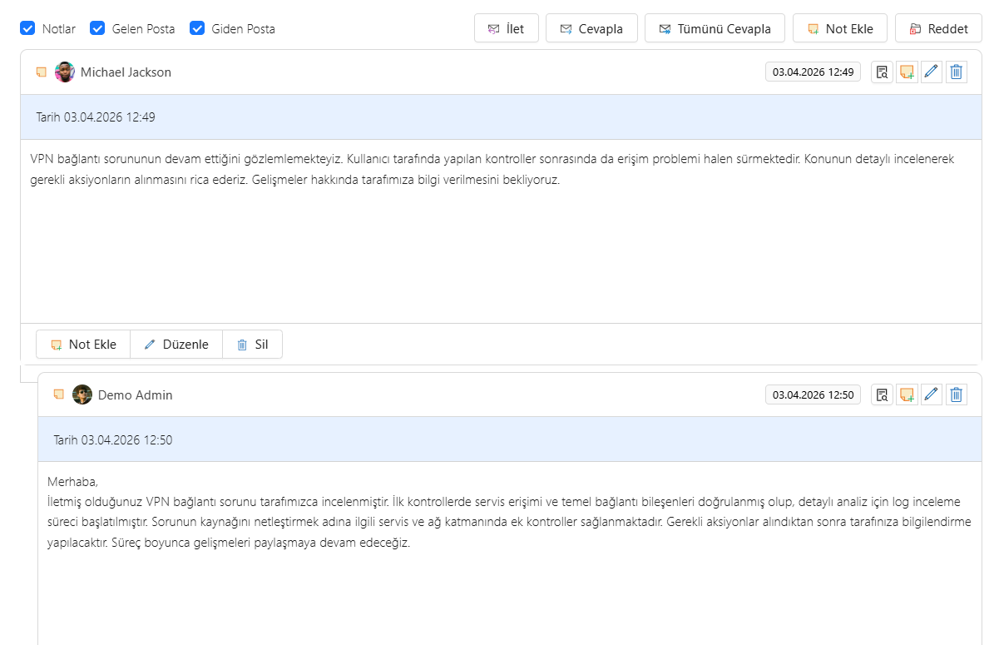
Listeden seçilen onlarca kayıt için aynı anda atama, durum değişimi, etiketleme veya yönlendirme uygulanabilir; tekrarlayan tıklamalar ve kopyala-yapıştır ihtiyacı ortadan kalkar. Özellikle kampanya sonrası, toplu alarm veya aynı kök nedene bağlı dalga olaylarında ekip kapasitesi ölçülebilir şekilde korunur.
Durum, müşteri, hizmet, kategori, öncelik, tarih aralığı, atanan ekip ve özel alanlar birleştirilerek sorgulanabilir; tam metin veya yapılandırılmış arama ile büyük hacimli kuyruklarda bile hedef kayıt saniyeler içinde daraltılır. Kayıtlı görünümler sayesinde sık kullanılan sorgular tek tıkla yeniden çağrılabilir.
Gelen-giden e-posta iş parçacıkları, şablon yanıtları ve kanal bazlı mesajlar olay kaydıyla zaman çizelgesi halinde ilişkilendirilir; kim, ne zaman, hangi kanaldan yazdı net biçimde görülür. Denetim, müşteri şikâyeti veya SLA tartışmalarında iletişim kopukluğu yerine tek doğruluk kaynağı sunulur.
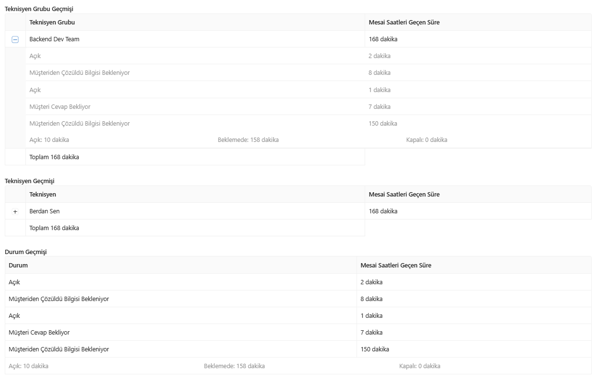
İç ekip, son kullanıcı ve gerektiğinde üçüncü taraf tedarikçiler aynı olay bağlamında yorum, ek ve durum güncellemesi paylaşır; paralel e-posta zincirleri veya anlık mesajda kalan “görünmeyen” bilgi birikmez. Geçiş teslimlerinde ve çok disiplinli vakalarda süreklilik ve hesap verebilirlik güçlenir.
Dahili teşhis adımları, geçici çözüm detayları veya hassas müşteri verisi yalnızca yetkili rollere görünen notlarda tutulur; kullanıcıya giden açıklamalar ise ayrı bir akışta standart dil ve onay süreçleriyle yönetilir. Böylece hem KVKK/veri sınıflandırması hem de müşteri iletişiminde tutarlılık korunur.
Karmaşık olaylar tek bir “ana kayıt” altında alt görevlere ayrılabilir; ağ, uygulama ve saha ekipleri kendi iş paketleri üzerinden ilerlerken ana olayın genel durumu tek yerden izlenir. Son teslim tarihleri ve sorumluluklar netleştiği için çift iş veya boşa harcanan bekleme süreleri azalır.
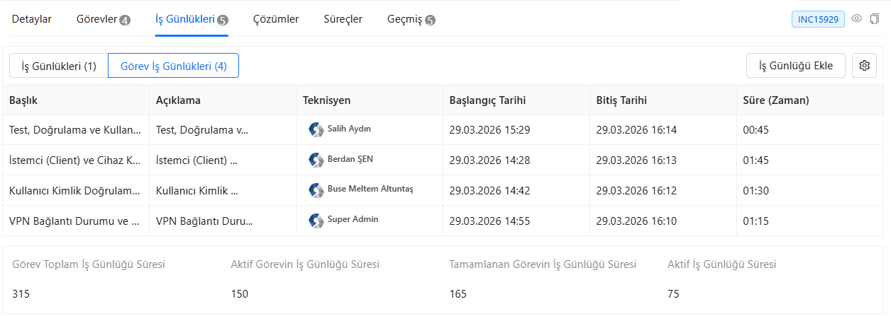
“B tamamlanmadan A başlamasın” gibi öncelik ve tamamlanma bağımlılıkları tanımlanabilir; sistem izin vermediği sıçramaları engelleyerek hatalı kapatma veya eksik doğrulama riskini düşürür. Çok adımlı operasyonel senaryolarda iş sırası kurumsal bilgi birikimine göre kilitlenir, yeni ekip üyeleri bile doğru akışı takip eder.
Her müdahale için süre, aktivite tipi ve açıklama satırı girilerek iş günlüğü oluşturulur; bütçe, faturalama veya kapasite planlaması için gerçekçi veri üretilir. Yönetim, hangi olayın ne kadar “görünmez” efor yediğini raporlayarak süreç iyileştirmesine ve doğru kadro ölçeklendirmesine karar verebilir.
Kayıt üzerinde aktif çalışma, bekleme veya duraklatma gibi durumlar otomatik ölçülerek manuel hata ve unutulan süre girişleri azaltılır. SLA hesapları ve geriye dönük analizler için tutarlı bir zaman ekseni oluşur; ekip üyeleri yönetim yerine çözüme odaklanabilir.
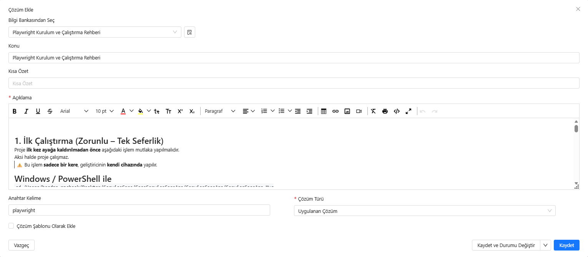
Öncelik, SLA kalan süre ve ekip yükü kurallarıyla birleştirilerek iş sırası ve zaman tahsisleri dinamik olarak dengelenir. Böylece hem kritik olaylarda kaynak kaçırılması azalır hem de düşük öncelikli işlerin süresiz ertelenmesi önlenir; operasyon planı gerçek zamanlı veriye dayanır.
Olay açıklaması, kategori veya etkilenen hizmete göre ilgili makale ve çözüm adımları önerilir; teknisyen aynı sorunu her seferinde sıfırdan araştırmak zorunda kalmaz. Bilgi bankası güncellendikçe öneriler de canlı kalır ve kurumsal hafıza somut MTTR iyileştirmesine dönüşür.
Önerilen geçici çözüm, uygulanan düzeltme ve doğrulanmış kalıcı çözüm ayrı kayıt katmanlarında tutulur; böylece “geçici çözüm kalıcı oldu” gibi karışıklıklar ve yanlış kapama gerekçeleri önlenir. Raporlama ve problem yönetimi için hangi adımın ne zaman etkili olduğu netleşir.
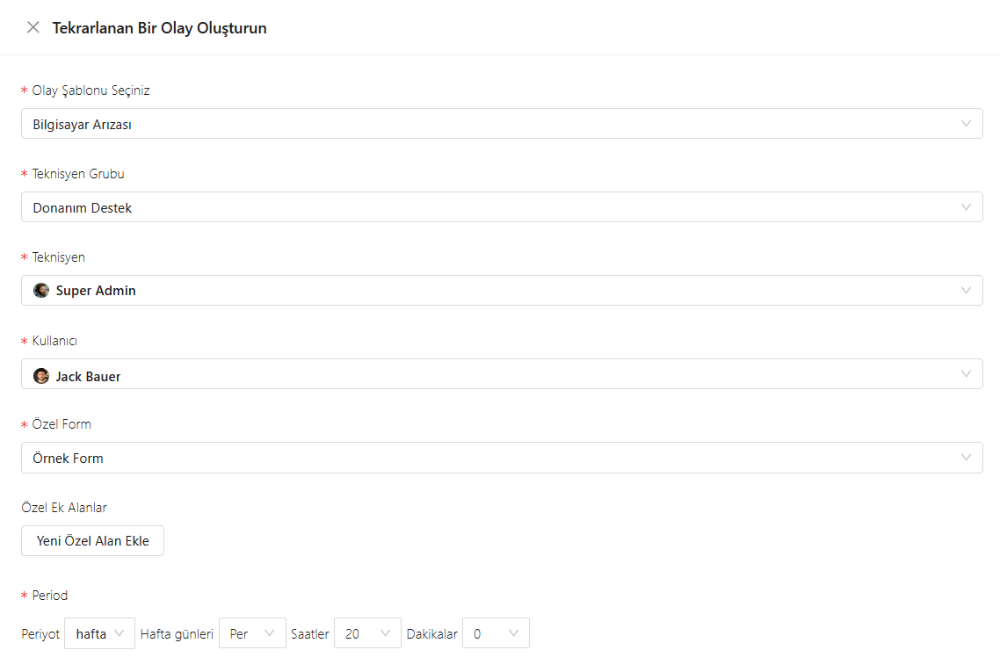
Aynı belirti, varlık veya hata koduyla tekrar eden olaylar desen olarak işaretlenir; önerilen öncelik, atama veya çözüm şablonları geçmiş başarılı vakalardan beslenir. Ekip müdahalesi hızlanırken kök nedenin üstüne gidilmesi için Problem kaydına tetikleyici sinyaller güçlenir.
Tekrarlayan veya yüksek etkili olaylar tek tıkla veya kural ile Problem kaydına bağlanabilir; ilişkili olaylar kök neden çalışmasında tek çatı altında toplanır. Incident tarafı çözülürken kalıcı iyileştirme takibi kopmadan sürdürülür ve ITIL hattında süreç bütünlüğü korunur.
Olay, ilgili değişiklik kaydı veya iyileştirme (CI) talebiyle ilişkilendirilerek “bu kesinti hangi değişiklikten sonra başladı?” sorusu hızlıca yanıtlanır. Onaylı değişikliklerin operasyonel sonuçları izlenebilir; gereksiz acil değişiklik baskısı azalır, kontrollü iyileştirme kültürü desteklenir.
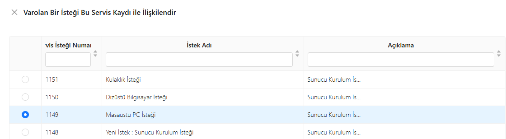
Aynı kesintiden doğan alt olaylar, upstream/downstream bağımlılıklar veya müşteri tarafında açılan paralel kayıtlar birbirine bağlanır; tekilleştirme kurallarıyla birlikte kullanıldığında “aynı fırtınanın” tamamı tek resimde görülür. İletişim ve kök neden analizi için parçalanmış gerçeklik yerine bütünsel izlenebilirlik sunulur.
Sunucu, uygulama, ağ bileşeni ve iş servisi gibi CI’lar olaya bağlandığında etkilenen kullanıcı sayısı, kritiklik ve bağımlılık zinciri anında görünür. Değişiklik ve yayın planlarıyla çapraz kontrol mümkün olur; “hangi varlık çöktü, kim etkilendi?” sorusu dakikalar içinde yanıtlanır.
Araya sekme veya farklı uygulama girmeden çağrı sahibi, sözleşme kapsamı, lokasyon ve bağlı varlıklar tek yüzeyde özetlenir. Teknisyen, bağlamı tamamlamak için sistemler arası arama yapmak yerine çözüm adımına odaklanır; müşteri deneyimi ve çözüm süresi birlikte iyileşir.
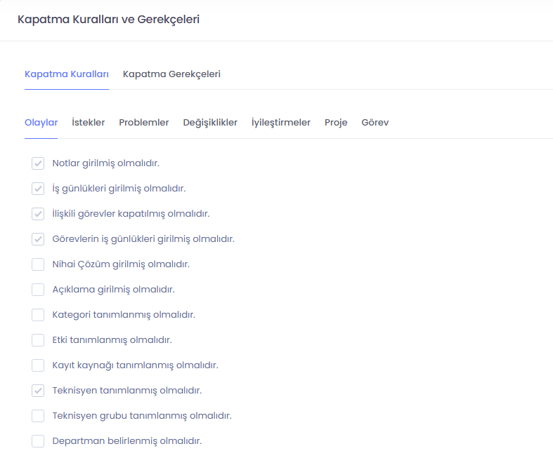
Alan güncellemeleri, atama değişiklikleri, SLA duraklatmaları ve sistem yorumları zaman damgası ve kullanıcı bilgisiyle saklanır; denetim, iç soruşturma veya müşteri itirazında “ne zaman kim ne yaptı?” şeffaf biçimde kanıtlanır. Operasyonel öğrenme için geçmiş olaylar yeniden oynatılabilir nitelikte kalır.
Kategori, öncelik veya müşteri segmentine göre kapatma öncesi zorunlu alanlar, onay adımları veya çözüm kodu seçimi tanımlanabilir. Erken veya eksik kapatma engellenirken, düşük riskli taleplerde gereksiz bürokrasi aşılmaz; kalite ile hız dengesi kurumsal politika ile yönetilir.
Müşteri sözleşmesi, iç OLA ve öncelik matrisi olaya otomatik uygulanır; yanıt ve çözüm süreleri anlık izlenir, ihlal veya pausa nedenleri kayıt altına alınır. Yönetim için uyum raporları üretilebilir; sürekli iyileştirme toplantılarında somut metriklerle konuşulur, “söz verilen servis” ile “gerçekleşen operasyon” hizalanır.